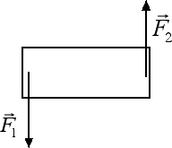
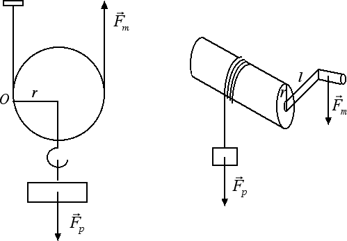

Equilibrio per rotazioni
Applicazioni
Coppia di forze. Supponete di voler mettere in rotazione la gomma posta sul vostro banco senza nel contempo farla traslare. Una possibilità è quella di applicare alle due estremità della gomma due forze aventi la stessa direzione, la stessa intensità e verso opposto, come nella figura sottostante. Due forze con queste caratteristiche prendono il nome di coppia di forze.

Il fatto che le due forze abbiano uguale intensità garantisce che non ci sia alcun moto di traslazione. Viceversa le due forze generano entrambe una rotazione in senso antiorario. Per esercizio potete provare che il momento totale della coppia è dato da M = F · d dove F è l'intensità delle due forze mentre d è la distanza tra le rette d'azione delle due forze. Due coppie di forze si dicono equivalenti quando hanno lo stesso momento.
Molte macchine di uso comune si basano sui principi fisici che abbiamo descritto nelle ultime sezioni. Due esempi sono costituiti dalla carrucola e dal verricello illustrati nella seguente figura:

Partiamo dall'analisi della figura di sinistra: una carrucola. In questo caso le forze in gioco sono due: la forza motrice Fm che tende a generare una rotazione antioraria di momento Fm · 2r e la forza-peso Fp che tende a generare una rotazione oraria di momento - Fp · r. Se vogliamo sollevare il peso, il momento della forza motrice deve avere intensità maggiore del momento dovuto alla forza-peso, ossia: Fm · 2r > Fp · r. Dividendo la precedente relazione per r otteniamo che Fm > Fp / 2, in altre parole è sufficiente applicare una forza motrice pari alla metà della forza-peso per riuscire a sollevare il carico.
Un discorso analogo vale nel caso del verricello, riportato nella figura di destra. Il centro di rotazione in questo caso coincide con l'asse del cilindro. La forza-peso genera una rotazione antioraria di momento Fp · r, dove r è il raggio del cilindro. La forza motrice invece genera una rotazione in senso orario di momento - Fm · l, dove l è la lunghezza dell'asta del verricello. Per sollevare il carico, il momento della forza motrice deve avere un'intensità maggiore di quello della forza-peso, ossia Fm · l > Fp · r da cui Fm > Fp · r / l. Per minimizzare la fatica (ossia la forza motrice da applicare) andremo a costruire verricelli con piccoli valori del raggio r e grandi valori della lunghezza dell'asta l. Ad esempio se r = 10 cm e l = 100 cm, sarà sufficiente una forza motrice pari a 1/10 della forza peso per sollevare il carico.
Per concludere questa sezione, vogliamo ricordare come un esempio di verricello presente nella nostra vita di tutti i giorni è costituito dai pedali e dalla ruota dentata della nostra bicicletta: i pedali giocano il ruolo della manovella del verricello, mentre la ruota dentata gioca il ruolo del cilindro del verricello. Per ridurre la fatica e rendere più leggera la pedalata è necessario ridurre il raggio r della ruota dentata.